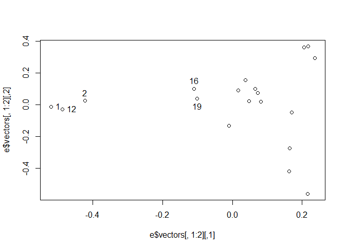

9 Week 8: Genome wide association study (GWAS)
This week we’re going to show you how to perform a genome wide association study or GWAS.
The lecture for this week can be found here
9.1 load in the data
The data for this week consist of several files in beagle format, a genome index file (.fai), and a few small text files.
wget https://raw.githubusercontent.com/BayLab/MarineGenomicsData/main/week8.tar.gz
tar -xzvf week8.tar.gz
#and one more file that was too big to upload with the others
cd MarineGenomicsData/week8
wget https://raw.githubusercontent.com/BayLab/MarineGenomicsData/main/salmon_chr6_19ind.BEAGLE.PL.gz9.2 install packages in R
We’ll be using the package qqman to make a manhattan plot.
#install.package("qqman")9.3 install angsd and pcangsd (again?)
If you missed week 6 and didn’t get pcangsd or angsd(week 3) installed. Here are the scripts to install them.They take a few minutes to install. There is no need to install these again if you installed them last time.
9.3.1 install angsd
cd
git clone --recursive https://github.com/samtools/htslib.git
git clone https://github.com/ANGSD/angsd.git
cd htslib;make;cd ../angsd ;make HTSSRC=../htslib
cd9.3.2 for pcangsd
install pip for python
curl https://bootstrap.pypa.io/get-pip.py -o get-pip.py
python3 get-pip.pywe need to add our home directory to the path for pip look at path echo $PATH
add the location of pip to our path
export PATH="$HOME/.local/bin:$PATH"then install pcangsd
git clone https://github.com/Rosemeis/pcangsd.git
cd pcangsd/
pip install --user -r requirements.txt #this installs additional requirements for pcangsd
python3 setup.py build_ext --inplace9.4 The data
The data we’re working on for the GWAS comes from the paper by Kijas et al. 2018 where they studied the genetic basis of sex determination in the atlantic Salmon. The paper can be found here. In short they examined the genetic basis of sex in 19 salmon for which they have whole genome sequence data. We’ll only be looking at two chromosomes (2 and 6) of this data.
9.5 take Beagle file and generate lrt file
To do the test of genome wide association we need to take our Beagle file and test whether there is an association with our phenotype (in this case whether a fish has a male or female phenotype). The phenotypes are coded as 0 = Female and 1 = Male in the phenobin file.
$HOME/angsd/angsd -doMaf 4 -beagle salmon_chr2_19ind.BEAGLE.PL.gz -yBin phenobin -doAsso 2 -fai Salmon.faiThis will generate several output files labeled angsdput. We’ll use the file with the lrt0 extension to plot our manattan plot.
9.6 take lrt file and make a manhattan plot
#in R
#set working directory
setwd("/home/margeno/MarineGenomicsData/Week8")#read in the data
lrt<-read.table(gzfile("angsdput.lrt0.gz"), header=T, sep="\t")
#look at it
str(lrt)## 'data.frame': 224460 obs. of 8 variables:
## $ Chromosome : int 2 2 2 2 2 2 2 2 2 2 ...
## $ Position : int 13 59 74 153 548 550 613 1182 1361 1533 ...
## $ Major : Factor w/ 4 levels "A","C","G","T": 3 3 3 2 2 2 2 2 2 2 ...
## $ Minor : Factor w/ 4 levels "A","C","G","T": 4 1 1 3 4 4 1 4 1 1 ...
## $ Frequency : num 0.237 0.5 0.316 0.184 0.316 ...
## $ N : int 19 19 19 19 19 19 19 19 19 19 ...
## $ LRT : num -999 -999 -999 -999 -999 -999 -999 -999 -999 -999 ...
## $ high_WT.HE.HO: Factor w/ 803 levels "0/0/19","0/1/18",..: 125 67 679 198 679 679 372 327 358 372 ...#we have a few LRT values that are -999, we should remove them. How many do we have?
length(which(lrt$LRT == -999))## [1] 210597#210597 #most are filtered out
length(lrt$LRT)## [1] 224460#224460
length(lrt$LRT)-length(which(lrt$LRT == -999))## [1] 13863#[1] 13863
#remove the values that are not -999 and that are negative
lrt_filt<-lrt[-c(which(lrt$LRT == -999),which(lrt$LRT <= 0)),]hist(lrt_filt$LRT, breaks=50)
Everything looks good to proceed to making our manhattan plot.
require (qqman)the function manhattan requires each SNP to have it’s own “name.” Let’s make a vector for rownumbers that start with the letter r. We also need to convert our LRT values to pvalues. We’ll use the command dchisq to get pvalues.
lrt_filt$SNP<-paste("r",1:length(lrt_filt$Chromosome), sep="")
#we also need to make sure we don't have any tricky values like those below
lrt_filt<-lrt_filt[-c(which(lrt_filt$pvalue == "NaN" ),
which(lrt_filt$pvalue == "Inf"),
which(lrt_filt$LRT == "Inf")),]
#get pvalues
lrt_filt$pvalue<-dchisq(lrt_filt$LRT, df=1)manhattan(lrt_filt, chr="Chromosome", bp="Position", p="pvalue")
Let’s look at a qq-plot of our pvalues to check the model fit
qqnorm(lrt_filt$pvalue)
This looks a bit weird, we would expect it to be mostly a straight line with some deviations at the upper right. If we were moving forward with this analyses we’d want to do more filtering of our data.
We can highlight the values that are exceed a threshold. There are several ways to determine a threshold, but one is to make a vector of random phenotypes and re-run our association test. We can then set the highest LRT value from the random phenotype test as our upper limit for our plot with the actual phenotypes.
#make a vector with 19 1's and 0's
x<-sample(c(1,0), 19, replace=T)
#write this to our week 8 directory
write.table(x, "rando_pheno", row.names = F)And now use that phenotype file to run our association test again, making sure to specify a different output file.
$HOME/angsd/angsd -doMaf 4 -beagle salmon_chr2_19ind.BEAGLE.PL.gz -yBin rando_pheno -doAsso 2 -fai Salmon.fai -out randotestAnd rerun the code in R to see what our maximum LRT values are in this random phenotype test.
lrt_rando<-read.table(gzfile("randotest.lrt0.gz"), header=T, sep="\t")
#we need to remove those -999 values again
rando_filt<-lrt_rando[-c(which(lrt_rando$LRT == -999),which(lrt_rando$LRT <= 0)),]
summary(rando_filt$LRT, na.rm=T)## Min. 1st Qu. Median Mean 3rd Qu. Max. NA's
## 0.000001 0.214816 0.669551 Inf 2.029913 Inf 1#we have some Inf values we also need to remove, let's add those to our filtering line above
rando_filt<-lrt_rando[-c(which(lrt_rando$LRT == -999),which(lrt_rando$LRT <= 0), which(lrt_rando$LRT == Inf)),]
max(rando_filt$LRT, na.rm=T)## [1] 12.33287So we can highlight all of the SNPs that have an LRT greater than 12 in our association test.
#make a list of the candidates
candidates<-lrt_filt[which(lrt_filt$LRT > 36),]$SNP#refer to that list of candidates with the highlight parameter
manhattan(lrt_filt, chr="Chromosome", bp="Position", p="pvalue", highlight = candidates)
Comparing our results to the Kijas et al. 2018 paper, we have a similar pattern of many SNPs across the chromosome showing a relationship with phenotype (sex). Interestingly this paper found that there are three chromosomes that are associated with sex in Atlantic Salmon, but not all chromosomes give a strong signal in all individuals. For example, only three male individuals were found to have a clear association with chromosome 2, and the other males in the study were found to have an association with chromosomes 3 and 6.
These results highlight the fluid nature of sex determination in animals, even those with a genetic basis to sex determination.
For the exercise you’ll take a closer look at chromosome 6, where you’ll try to find the individuals that are male from a PCA plot.
9.7 Exercises
1.For this exercise, we want to see which individuals actually show genomic levels of variation at chromosome 6. Using the code that we ran for week 6. Make a PCA plot of the salmon_chr3_19ind.BEAGLE.PL.gz file. Use the function
indentify()to find the points that are clustering apart from the other points. Verify that these are males by referring to the table in the Kijas et al. paper here. Note their individuals are in the same order as our samples though the names don’t match.
Solution
#run pcangsd on our chr6 data
python3 ../../pcangsd/pcangsd.py -beagle salmon_chr6_19ind.BEAGLE.PL.gz -o pca6_out -threads 28In R make a PCA plot
#read in the data
cov<-as.matrix(read.table("pca6_out.cov"))
#compute the eigen values
e<-eigen(cov)
#how much variation are we explaining here?
e$values/sum(e$values)## [1] 0.1379496011 0.1246126748 0.0969103029 0.0920252715 0.0774570788
## [6] 0.0685079248 0.0605808079 0.0554445095 0.0493884028 0.0444119246
## [11] 0.0423030396 0.0368221717 0.0329494215 0.0316195242 0.0269138675
## [16] 0.0184940705 0.0149661517 -0.0006450986 -0.0107116466#looks like 13.7% is explained by the first axis#make a plot of the first two axes
plot(e$vectors[,1:2])
#use identify to find the points that are clustered apart from the others
#identify(e$vectors[,1:2]) This doesn't work in R studio so we'll show the plot below
#If you select the points on the left most of the screen, you will find they are rows
# 1, 2, and 12
#If you select the other two points that are leftmost from the remaining points you also get
# 16 and 19
Looking at the table in the Kilas paper, the Animals in rows 1, 2, and 12 are Male, but it’s rows 17 and 18 that are next not 16 and 19, so we may have somethings out of order in our list.
- Make a manhattan plot for chromosome 6. You will need to make a new phenotype file that has 1’s for all the males identified in problem 1. Alterntatively, you can make a phenotype file from table 1 in Kilas et al. 2018, setting the animals that were found to be male on chr 6 to 1 and all other animals to 0.
Solution
$ gzip geno_like_filt_allIND.beagleand now we can run our pcangsd code
#make a phenotype file, note you can also do this in nano or vim in the terminal. Whichever makes sense for you.
pheno_chr6<-c(1, 1, 0, 0, 1, 1, 0, 0, 1, 1, 1, 0, 0, 1, 0, 1, 1, 0, 0)
write.table(pheno_chr6, file = "phenobin_ch6" )
#then in the terminal run our command in angsd again using the chr6 BEAGLE file and the phenotype file we just made
# $HOME/angsd/angsd -doMaf 4 -beagle salmon_chr6_19ind.BEAGLE.PL.gz -yBin phenobin_ch6 -doAsso 2 -fai Salmon.fai -out chr6_out
#and then we can remake our manhattan plot by copying and pasting the code above
lrt<-read.table(gzfile("chr6_out.lrt0.gz"), header=T, sep="\t")
#look at it
str(lrt)## 'data.frame': 268080 obs. of 8 variables:
## $ Chromosome : int 6 6 6 6 6 6 6 6 6 6 ...
## $ Position : int 57 1115 1245 4093 4661 4694 6088 6664 7795 7818 ...
## $ Major : Factor w/ 4 levels "A","C","G","T": 2 2 2 4 3 3 2 2 1 1 ...
## $ Minor : Factor w/ 4 levels "A","C","G","T": 3 4 3 3 1 1 4 4 2 4 ...
## $ Frequency : num 0.432 0.842 0.289 0.184 0.5 ...
## $ N : int 19 19 19 19 19 19 19 19 19 19 ...
## $ LRT : num 0.755 -999 -999 -999 1.062 ...
## $ high_WT.HE.HO: Factor w/ 880 levels "0/0/19","0/1/18",..: 394 84 783 205 119 195 430 189 417 401 ...#remove the values that are not -999 and that are negative
lrt_filt<-lrt[-c(which(lrt$LRT == -999),which(lrt$LRT <= 0)),]
lrt_filt$SNP<-paste("r",1:length(lrt_filt$Chromosome), sep="")
#we also need to make sure we don't have any tricky values like those below
lrt_filt<-lrt_filt[-c(which(lrt_filt$pvalue == "NaN" ),
which(lrt_filt$pvalue == "Inf"),
which(lrt_filt$LRT == "Inf")),]
#get pvalues
lrt_filt$pvalue<-dchisq(lrt_filt$LRT, df=1)
#make our plot
manhattan(lrt_filt, chr="Chromosome", bp="Position", p="pvalue")
9.8 Creature of the Week!
The lovely Mantis Shrimp (image credit: Dorothea OLDANI,Unsplash)